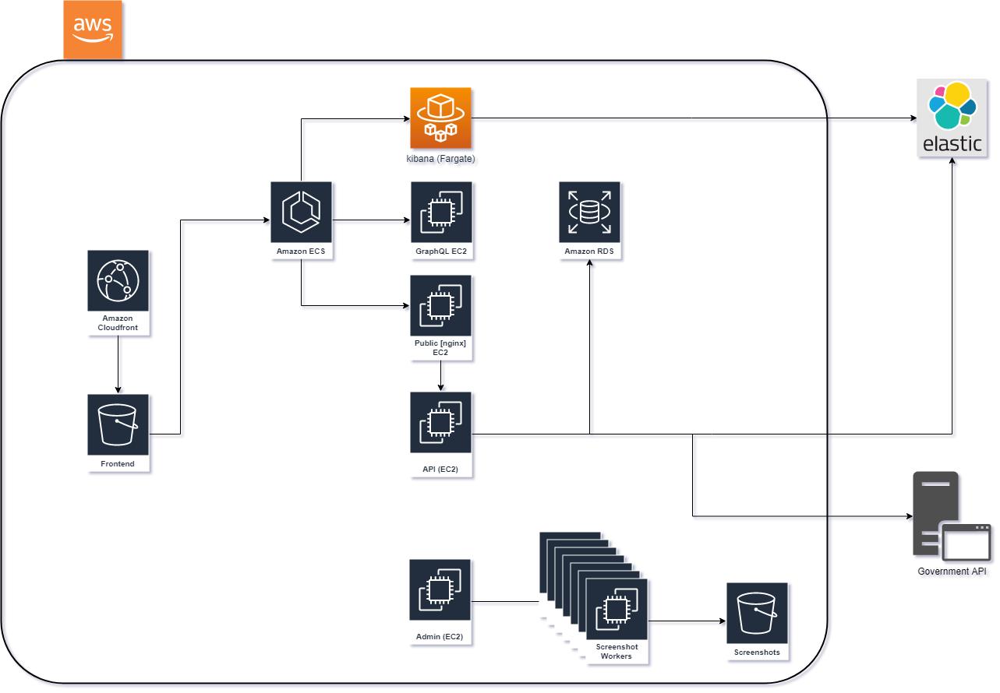
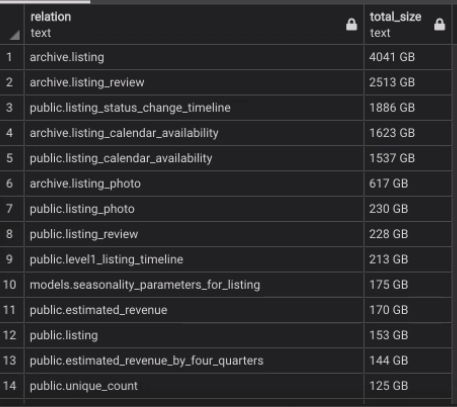

DevOps & Donuts Project Showcase
Granicus HostCompliance
Created by Darko Klincharski
Who are Granicus?
A multi-billion dollar company working primarly in the govservice field. Expanding by acquiring and assimilating govservice startups/scale-ups.
What is HostCompliance?
HostCompliance uses fancy logic to automatically process rental properties page listings and determine the exact physical address of it. It then checks the government registered rental properties for a match. If no match, the owner receives a fine. Not cool...
Tech Stack
- AWS
- Postgresql
- ELK
- Angular (to be replaced with React)
- Python
- GraphQL
Infrastructure From Hell

Problem 1 - Database
Production DB size is 14TB. AWS has a hard limit of 16TB.
Problem 1 - Database (Cont'd)

Problem 1 - Database (Cont'd)
- Historical data is not archived properly
- Data for no-longer customers is not purged
- Duplicate data
Problem 1 - Database (Solutions)
- Purge data
- Recreate RDS instance to get 64TB limit
- Implement regular clean up
Problem 2 - Admin Machine
The admin machine is the orchestrator of the entire app. It controls crawling jobs, screenshot workers and the ML jobs.
- Setup manually long time ago
- No documentation
- Everyone uses it for one-off jobs
- No auto-scaling
- No disaster recovery
Problem 2 - Admin Machine (Solution)
- Reverse Engineer
- Packer template
- Dockerize
Problem 3 - CI/CD
Absolute mess.
- Combination of circleci, bash scripts and pythons script(s)
- CircleCI triggers a script that does an ssh to the Admin server and runs a python script that does the deploy
CircleCI
BASH
Python
Python
Problem 3 - CI/CD (Solution)
Dockerize the admin app and run it on ECS
Other known problems
Other known problems
Apart from CircleCI we have also Jenkins server that runs "something"
We are still developing CircleCI and Jenkins, while simultaneously migrating to GitLab
No dev environment, only staging & production (but it is currently in development)
Two regions, US and Canada, both set up manually
Frontend is currently being rewritten without consulting DevOps
DevOps Focus
DevOps Focus
Terraform everything (new DEV environment)
Semi-disposable dev environment
Reduce AWS Costs
Codify the admin machine setup
Clean-up and standardize the CI/CD